viewof x0 = Inputs.range([-2, 3], {
step: 0.1,
label: "Punto inicial x₀:",
value: 1
})
viewof paso = Inputs.range([0, 20], {
step: 1,
label: "Número de iteraciones:",
value: 0
})Optimización convexa
Capítulo 1 - Sección 2
\[ \def\NN{\mathbb{N}} \def\ZZ{\mathbb{Z}} \def\RR{\mathbb{R}} \def\media{\mathbb{E}} \def\calL{\mathcal{L}} \def\calG{\mathcal{G}} \def\calD{\mathcal{D}} \def\calN{\mathcal{N}} \def\aa{{\bf a}} \def\bb{{\bf b}} \def\cc{{\bf c}} \def\dd{{\bf d}} \def\hh{{\bf h}} \def\qq{{\bf q}} \def\xx{{\bf x}} \def\yy{{\bf y}} \def\zz{{\bf z}} \def\uu{{\bf u}} \def\vv{{\bf v}} \def\ww{{\bf w}} \def\XX{{\bf X}} \def\TT{{\bf T}} \def\SS{{\bf S}} \def\bfg{{\bf g}} \def\bftheta{\boldsymbol{\theta}} \def\bfmu{\boldsymbol{\mu}} \def\bfxi{\boldsymbol{\xi}} \def\bflambda{\boldsymbol{\lambda}} \def\bfgamma{\boldsymbol{\gamma}} \def\bfbeta{\boldsymbol{\beta}} \def\bfalpha{\boldsymbol{\alpha}} \def\bfeta{\boldsymbol{\eta}} \def\bfmu{\boldsymbol{\mu}} \def\bfnu{\boldsymbol{\nu}} \def\bfSigma{\boldsymbol{\Sigma}} \def\bfone{\mathbf{1}} \def\bfzero{\mathbf{0}} \def\argmin{\mathop{\mathrm{arg\,min\,}}} \def\argmax{\mathop{\mathrm{arg\,max\,}}} \]
En esta sección nos enfocaremos en los conceptos fundamentales que sustentan la optimización convexa, una rama central en la teoría y práctica de la optimización. A partir de las ideas presentadas en la Introducción, donde destacamos el rol de la convexidad, ahora desarrollaremos con mayor profundidad las nociones teóricas que permiten formular y analizar este tipo de problemas.
Antes, veamos el siguiente gráfico, donde se ilustra las ventajas de trabajar con problemas convexos. Allí, se puede visualizar el comportamiento de las iteraciones de un método de optimización que tiene por objetivo aproximarse al punto óptimo (en este caso, el mínimo global). ¿Qué se observa?
De ahora en adelante, utilizaremos algunas notaciones básicas.
En \(\RR^p\) consideraremos el producto interno usual \[ \langle \xx,\yy\rangle_2:=\xx^\top\yy=\sum_{i=1}^px_iy_i, \] y escribiremos indistintamente \(\langle \xx,\yy\rangle_2\) o \(\xx^\top \yy\), según conveniencia. La norma euclidiana correspondiente es \[ \|\xx\|_2:=(\xx^\top\xx)^{1/2}. \]
Asimismo, recordemos que una matriz \(A\) se dice semidefinida positiva (\(A\succeq 0\)), si verifica \(\xx^\top A\xx\geq 0\) para todo \(\xx\in\RR^p\), mientras que se dice definida positiva (\(A\succ 0\)) si la desigualdad es estricta. De manera análoga, se definen las matrices semidefinidas negativas (\(A \preceq 0\)) y definidas negativas (\(A \prec 0\)).
Al conjunto de matrices simétricas lo denotaremos \(\SS^p\), mientras que con \(\SS_+^p\) y \(\SS_{++}^p\) nos referiremos al conjunto de matrices simétricas semidefinidas positivas y simétricas definidas positivas, respectivamente.
Por último, del mismo modo que escribimos \(A\xx=\bb\) para referirnos a un conjunto de igualdades de la forma \(\aa_i^\top\xx=b_i\), vamos a denotar \(A\xx\preceq\bb\) al conjunto de desigualdades \(\aa_i^\top\xx\leq b_i\).
Conjuntos convexos
Una gran parte del éxito de los métodos de optimización convexa radica en una idea geométrica simple pero poderosa: la convexidad del conjunto factible \(\Omega\).
Un conjunto convexo es, en pocas palabras, un conjunto en el cual, si tomamos dos puntos cualesquiera, el segmento que los une queda completamente contenido dentro del conjunto. Esta propiedad, que a primera vista parece modesta, es en realidad clave para que los problemas de optimización tengan buen comportamiento: contribuye a garantizar que los métodos de optimización puedan avanzar progresivamente dentro del conjunto factible sin salir de él; es decir, facilita la construcción de puntos factibles.
Definiciones básicas
En esta sección introduciremos tres tipos fundamentales de conjuntos que aparecen en optimización: conjuntos afines, conjuntos convexos y conos. Antes, es necesario recordar la forma parámetrica de rectas y segmentos de recta.
Sean \(\xx_{1} \neq \xx_{2}\) dos puntos en \(\RR^{p}\). La recta que pasa por \(\xx_1\) y \(\xx_2\) puede describirse paramétricamente (con parámetro real \(\theta\)) mediante la siguiente ecuación: \[ \yy = \theta \xx_{1} + (1 - \theta) \xx_{2}\qquad \theta\in\RR. \tag{1} \]
Mientras que, si restringimos el valor del parámetro a \(0\leq \theta\leq 1\), obtenemos el segmento de recta (cerrado) entre ambos puntos, con \(\xx_2\) como punto inicial. En el siguiente gráfico, tenemos un ejemplo para poder comprobar esto visualmente moviendo el deslizador para el valor de \(\theta\), que determina la posición del punto sobre la recta.
Una expresión alternativa a (1) para la ecuación del segmento de recta es
\[ \yy=\xx_2+\theta(\xx_1-\xx_2)\qquad\theta\in[0,1], \]
la cual expresa \(\yy\) en términos del punto inicial \(\xx_2\) y la dirección \(\xx_1-\xx_2\). Además, podemos interpretar a \(\theta\) como la fracción del camino desde \(\xx_2\) hasta \(\xx_1\) donde se encuentra \(\yy\).
En base a las ideas geométricas introducidas, estamos en condiciones de presentar las definiciones fundamentales de conjuntos afines, conjuntos convexos, conos y otros conceptos relacionados.
Definición 1. (Conjunto afín) Un conjunto \(C \subset \RR^{p}\) es afín si la recta que pasa por cualquier par de puntos distintos en \(C\) está contenida en \(C\). Es decir, si se verifica \[ \theta \xx_1+(1-\theta)\xx_2\in C\qquad\forall \xx_1,\xx_2\in C,\; \forall\theta\in\RR. \]
Mostrar detalles
La expresión \(\theta \xx_1+(1-\theta)\xx_2\) es una combinación lineal entre los puntos \(\xx_1\) y \(\xx_2\) que verifica que la suma de sus coeficientes sea uno. Esta idea se puede generalizar a más de dos puntos: un punto de la forma \[ \theta_1\xx_1+\cdots+\theta_k\xx_k,\qquad \sum_{i=1}^k\theta_i=1 \]
se denomina combinación afín de los puntos \(\xx_1,\ldots,\xx_k\). Es fácil ver que un conjunto afín \(C\) contiene todas las combinaciones afines de sus puntos (📝 Ejercicio 1).
Dado un conjunto afín \(C\) y un punto \(\xx_0\in C\), el conjunto \[ V:= C-\xx_0=\{\xx-\xx_0 \mid \xx\in C\} \]
es un subespacio vectorial que no depende de la elección de \(\xx_0\) (📝 Ejercicio 2). Así, podemos expresar \[ C=V+\xx_0=\{v+\xx_0 \mid v\in V\}. \]
Definimos la dimensión de \(C\) como \[ \dim C:=\dim V. \]
Ejemplo 1 Conjunto solución de un sistema de ecuaciones lineales
Sea \(A\xx=\bb\) un sistema de ecuaciones lineales, con \(A\in\RR^{m\times p}\) y \(\bb\in\RR^m\). El conjunto solución \[ S := \{\xx \mid A\xx=\bb\} \] es un conjunto afín. De hecho, si \(\xx_1,\xx_2\in S\), entonces \(A\xx_1=\bb\) y \(A\xx_2=\bb\), tal que para cualquier \(\theta\in\RR\) se verifica \[ \begin{align*} A(\theta\xx_1+(1-\theta)\xx_2)&=\theta A\xx_1+(1-\theta)A\xx_2\\[1 pt] &=\theta\bb+(1-\theta)\bb\\ &=\bb. \end{align*} \]
Esto prueba que \(\theta\xx_1+(1-\theta)\xx_2\in S\). Dado que \(\xx_1\), \(\xx_2\) y \(\theta\) son arbitrarios, concluimos que \(S\) es un conjunto afín.
Definición 2. (Envolvente afín) La envolvente afín de un conjunto \(C\subset\RR^p\) es el conjunto de todas las combinaciones afines de puntos en \(C\). Esto es \[ \text{aff}\,C := \left\{\theta_{1} \xx_{1} + \cdots + \theta_{k} \xx_{k}\,\left|\,\xx_{i} \in C,\;\sum_{i=1}^k\theta_{i} = 1\right.\right\}. \]
El concepto de envolvente afín es muy importante para optimización, ya que de él se derivan dos nociones que, si bien no son muy comunes, serán fundamentales más adelante: la dimensión afín y el interior relativo.
La dimensión afín de \(C\) es la dimensión de su envolvente afín \(\text{aff}\,C\).
El interior relativo de \(C\) respecto a \(\text{aff}\,C\) es \[ \text{relint}\,C:=\left\{\xx\in C\,\left|\exists r>0: B(\xx,r)\cap \text{aff}\,C\subset C\right.\right\}, \] donde \(B(\xx,r):=\{\yy\mid\|\yy-\xx\|_2\leq r\}\) es la bola de centro \(\xx\) y radio \(r\).
Ejemplo 2 Interior relativo de un cuadrado en \(\RR^3\)
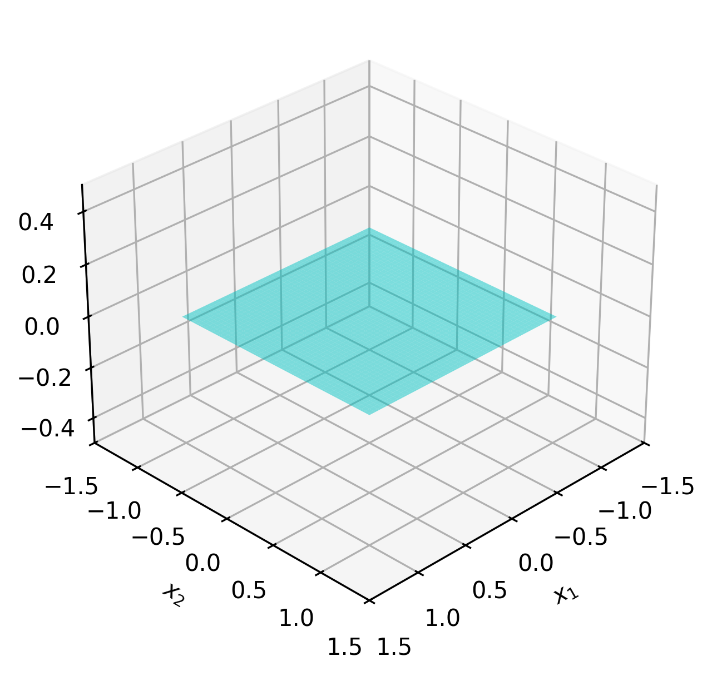
Sea \[ C=[-1,1]\times[-1,1]\times\{0\}\subset\RR^3. \]
La envolvente afín de \(C\) es un plano: \[ \text{aff}\,C=\{\xx\in\RR^3 \mid x_3=0\}. \]
Como consecuencia, a pesar de que el interior de \(C\) es vacío (\(\text{int}\,C=\emptyset\)), el interior relativo es \[ \text{relint}\,C=(-1,1)\times(-1,1)\times\{0\}. \]
Definición 3. (Conjunto convexo) Un conjunto \(C \subset \RR^p\) es convexo si el segmento de recta entre cualquier par de puntos distintos en \(C\) está contenido en \(C\). Es decir, si se verifica \[ \theta \xx_1+(1-\theta)\xx_2\in C\qquad\forall \xx_1,\xx_2\in C,\; \forall\theta\in[0,1]. \]
Mostrar detalles
Llamamos combinación convexa a un punto de la forma \[ \theta_{1} \xx_{1} + \cdots + \theta_{k} \xx_{k},\qquad \sum_{i=1}^k\theta_i = 1,\; \theta_{i} \geq 0. \]
Como en el caso de los conjuntos afines, se puede demostrar que un conjunto es convexo si y solo si contiene todas las combinaciones convexas de sus puntos (📝 Ejercicio 1).
Por otro lado, observar que, a diferencia de una combinación afín, una combinación convexa requiere la no negatividad de los coeficientes \(\theta_i\), lo cual significa que puede ser interpretada como un promedio ponderado de los puntos \(\xx_i\).
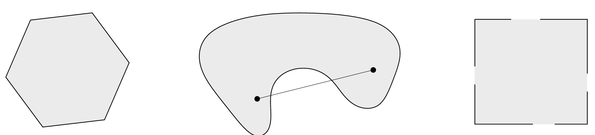
Ejemplo 3 Combinación convexa
Una empresa diseñó internamente tres posibles estrategias para la oferta de un nuevo producto. Para cada estrategia, realizó un análisis que le permitió estimar el nivel de satisfacción promedio del usuario (de 0 a 10) y el costo de implementación mensual (en miles de dólares), obteniendo:
- Estrategia A (satisfacción y costo altos): \((8.5,25)\).
- Estrategia B (satisfacción y costo medios): \((6.75,17.5)\).
- Estrategia C (satisfacción y costo bajos): \((4,12)\).
En lugar de implementar una única estrategia, la empresa decidió realizar una inversión de manera porcentual, destinando el 60% del presupuesto a la estrategia A, el 25% a la B y el 15% restante a la C. El costo y la satisfacción esperada están determinados por la siguiente combinación convexa: \[ \frac{3}{5}\cdot (8.5,25)+\frac{1}{4}\cdot (6.75,17.5)+\frac{3}{20}\cdot (4,12)=(7.3875,21.175). \]
En la siguiente figura podemos ver el resultado obtenido. El triángulo determinado por los puntos dados contiene todas las combinaciones convexas posibles.
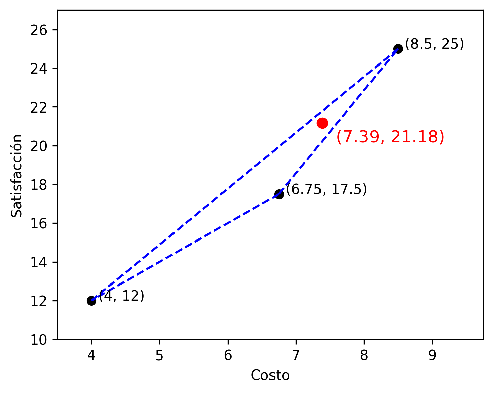
Definición 4. (Envolvente convexa) La envolvente convexa de un conjunto \(C\subset\RR^p\) es el conjunto de todas las combinaciones convexas de puntos en \(C\). Esto es \[ \text{conv}\,C := \left\{\theta_{1} \xx_{1} + \cdots + \theta_{k} \xx_{k}\,\left|\, \xx_{i} \in C,\; \theta_{i} \geq 0,\;\sum_{i=1}^k\theta_{i} = 1\right.\right\}. \]
Mostrar detalles
Como su nombre lo indica, la envolvente convexa \(\text{conv}\,C\) es siempre un conjunto convexo (📝 Ejercicio 3).
La envolvente convexa \(\text{conv}\,C\) es el conjunto convexo más pequeño que contiene a \(C\): si \(E\) es cualquier conjunto convexo que contiene a \(C\), entonces \(\text{conv}\,C \subset E\).
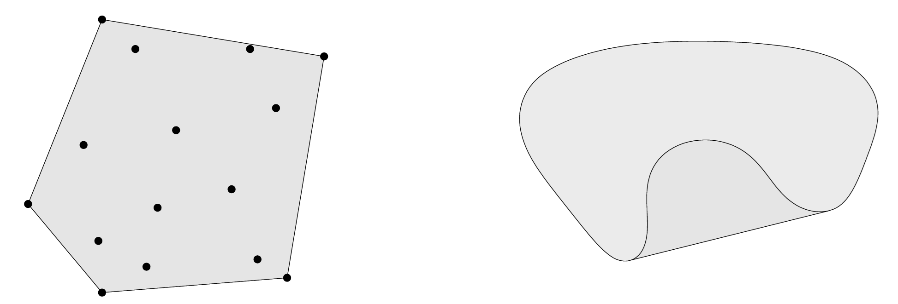
Ejemplo 4 Envolvente convexa con ConvexHull
En Python, una herramienta para calcular envolventes convexas es scipy.spatial.ConvexHull. Vamos a implementarlo para un conjunto de puntos de \(\RR^2\).
Definición 5. (Cono) Un conjunto \(C\subset\RR^p\) se denomina cono si verifica \[ \theta\xx\in C\qquad\forall \xx\in C,\; \forall \theta\geq 0. \]
Mostrar detalles
Llamamos combinación cónica a un punto de la forma \[ \theta_1\xx_1+\cdots+\theta_k\xx_j,\qquad \theta_i\geq 0. \]
Luego, esta caracterización le permitirá probar fácilmente que un conjunto \(C\) es un cono convexo si y solo si contiene todas las combinaciones cónicas de sus puntos (📝 Ejercicio 1).
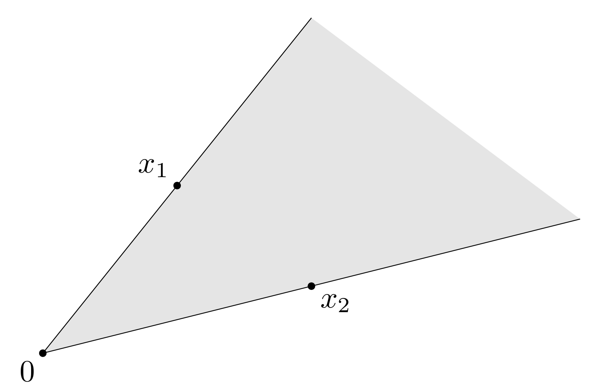
Ejemplo 5 Cono no convexo y su envolvente convexa
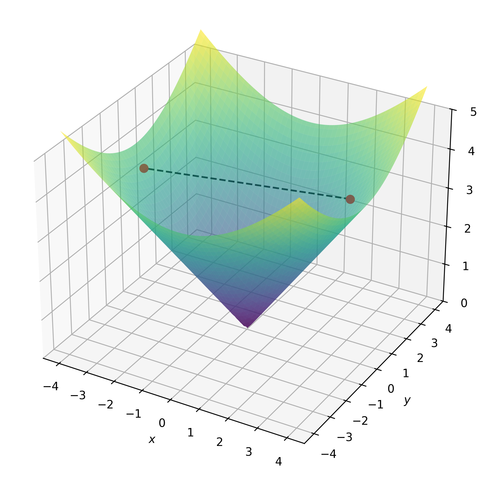
En \(\RR^3\), el conjunto \[ C=\{(x,y,z)\in\RR^3 \mid z=\sqrt{x^2+y^2}\} \] es un cono, pero no es convexo. En la figura se muestran un par de puntos que pertenecen a \(C\), mientras que el segmento entre ellos no. La condición de la Definición 5 de cono es inmediata: \[ z=\sqrt{x^2+y^2}\Rightarrow\theta z=\sqrt{(\theta x)^2+(\theta y)^2}\qquad\forall\theta\geq 0. \]
Ahora bien, si consideramos los segmentos entre pares de puntos, obtenemos su envolvente convexa: \[ \tilde C=\{(x,y,z)\in\RR^3 \mid z\geq\sqrt{x^2+y^2}\} \]
El conjunto \(\tilde{C}\) es un cono convexo. Veamos en el siguiente gráfico que, para dos puntos en \(\tilde{C}\) dados, cualquier combinación lineal de la forma \(\theta_1\xx_1+\theta_2\xx_2\), con \(\theta_1,\theta_2\geq 0\), queda contenida en \(\tilde{C}\).
Definición 6. (Envolvente cónica) La envolvente cónica de un conjunto \(C\in\RR^p\) es el conjunto de todas las combinaciones cónicas de puntos en \(C\). Esto es \[ \text{cone}\,C := \left\{\theta_{1} \xx_{1} + \cdots + \theta_{k} \xx_{k}\mid \xx_{i} \in C,\; \theta_{i} \geq 0\right\}. \]
Mostrar detalles
La envolvente cónica \(\text{cone}\,C\) es siempre un conjunto convexo (📝 Ejercicio 3).
La envolvente cónica \(\text{cone}\,C\) es el cono convexo más pequeño que contiene a \(C\): si \(E\) es cualquier cono convexo que contiene a \(C\), entonces \(\text{cone}\,C \subset E\).
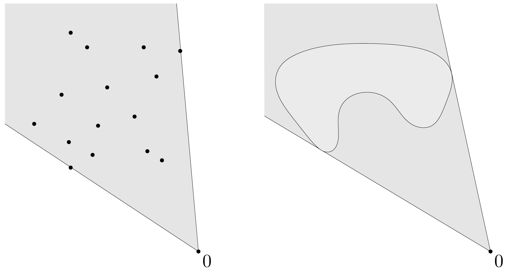
Operaciones que preservan convexidad
En esta sección describiremos algunas operaciones que preservan la convexidad de conjuntos y que nos permiten construir conjuntos convexos a partir de otros. Estas operaciones, junto con los ejemplos simples descritos anteriormente, forman un cálculo de conjuntos convexos que es útil para analizar convexidad.
- Intersección.
La intersección de cualquier número de conjuntos convexos es convexo.
- Funciones afines. Si \(S\subset \RR^{p}\) es convexo y \(f: \mathbf{R}^{p} \to \mathbf{R}^{m}\) es una función afín, entonces, la imagen de \(S\) bajo \(f\), \(f(S) := \{f(\xx) \mid \xx \in S\}\), es convexa. De manera similar, si \(f: \RR^{k} \to \RR^{p}\) es una función afín, la imagen inversa de \(S\) bajo \(f\), \(f^{-1}(S) := \{\xx \mid f(\xx) \in S\}\), es convexa.
- Suma. Si \(S_1\) y \(S_2\) son conjuntos convexos de \(\RR^p\), entonces \[ S_{1} + S_{2} := \{\xx_1 + \xx_2 \mid \xx_1 \in S_{1}, \xx_2 \in S_{2}\} \] es un conjunto convexo.
Ejemplo 6 Suma de un polígono y un disco
En \(\RR^2\), consideremos:
- \(S_1\) un pentágono regular.
- \(S_2\) el disco de centro \((0,0)\) y radio \(r\); es decir, \[ S_2:=\{(x,y)\in\RR^2\mid x^2+y^2\leq r\}. \]
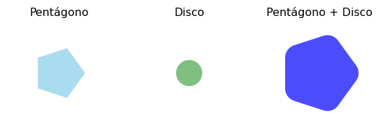
Ambos conjuntos son convexos (¿por qué?), por lo tanto \(S_1+S_2\) también lo es.
Ejemplo 7 Elipsoide
Sea \(\xx_0\in\RR^2\) y \(P\in\SS_{++}^2\). El elipsoide \[ E=\{\xx\in\RR^p\mid (\xx-\xx_0)^\top P^{-1}(\xx-\xx_0)\leq 1\} \] es un conjunto convexo, ya que es la imagen del disco unitario \(B(\bfzero,1):=\{\xx\in\RR^2\mid\|\xx\|_2\leq 1\}\) bajo la transformación afín \(f:\RR^2\to\RR^2\) definida por \[ f(\xx)=P^{1/2}\xx+\xx_0. \]
En efecto, \[ \begin{align} (f(\xx)-\xx_0)^\top P^{-1}(f(\xx)-\xx_0)&=(P^{1/2}\xx)^\top P^{-1}(P^{1/2}\xx)\\ &=\xx^\top \underbrace{P^{1/2}P^{-1}P^{1/2}}_{I_2}\xx\\ &=\|\xx\|_2^2\\[2pt] &\leq 1. \end{align} \]
Conjuntos convexos notables
Vamos a describir algunos conjuntos convexos importantes. Pero primero veamos algunos ejemplos sencillos y analicemos si, además de ser convexos, son conjuntos afines y/o conos.
Hiperplanos y semiespacios
Un hiperplano en \(\RR^p\) es un conjunto de la forma \[ \{\xx \mid \aa^\top \xx=b\},\qquad \aa\in\RR^p,\;\aa\neq\bfzero,\;b\in\RR. \]
Mostrar detalles
El vector \(\aa\) es normal al hiperplano. Dado un punto \(\xx_0\) del hiperplano, se verifica \(\aa^\top (\xx-\xx_0)=0\) para todo punto \(\xx\) del hiperplano.
El escalar \(b\) determina el desplazamiento del hiperplano respecto del origen. En efecto, la distancia del hiperplano al origen es \(b/\|\aa\|_2\) (probaremos esto más adelante en este capítulo).
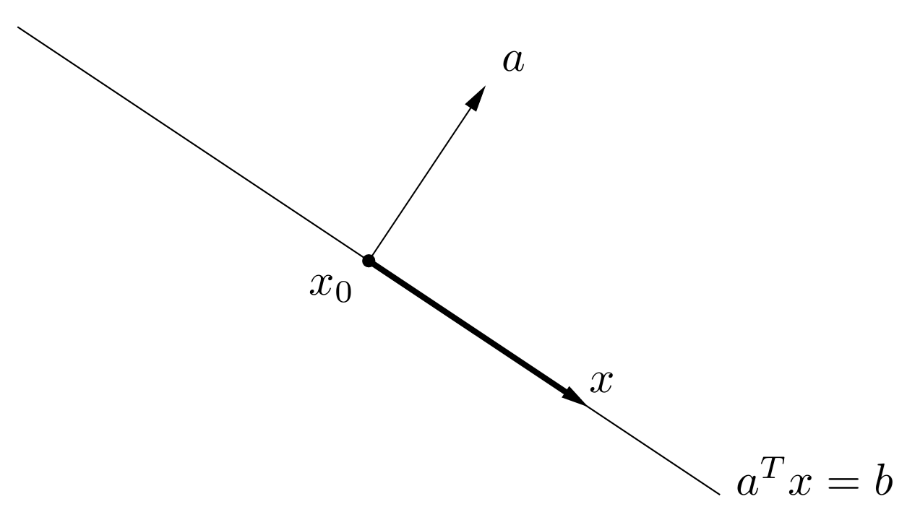
Un hiperplano divide a \(\RR^p\) en dos semiespacios. Un semiespacio cerrado es un conjunto de la forma \[ \{\xx \mid \aa^\top \xx\leq b\},\qquad \aa\in\RR^p,\;\aa\neq\bfzero,\;b\in\RR. \]
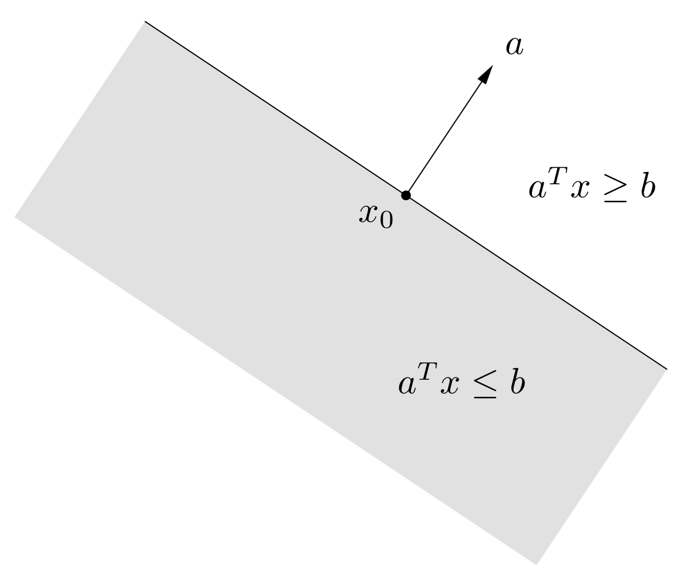
Bolas
Un bola en \(\RR^p\), de centro \(\xx_0\) y radio \(r\), es un conjunto de la forma \[ B(\xx_0,r):=\{\xx \mid \|\xx-\xx_0\|_2\leq r\},\qquad \xx_0\in\RR^p,\;r\in\RR^+. \]
Poliedros
Un poliedro en \(\RR^p\) es el conjunto solución de un número finito de igualdades y desigualdades lineales. Es decir, es de la forma \[ \mathcal{P}:=\{\xx \mid A\xx\preceq\bb,\; C\xx=\dd\},\qquad A\in\RR^{r\times p},\;C\in\RR^{m\times p},\; \bb\in\RR^r,\;\dd\in\RR^m. \]
Las igualdades y desigualdades son: \[ \aa_i^\top\xx\leq b_i,\qquad i=1,\ldots,r, \] \[ \cc_j^\top\xx= d_j,\qquad j=1,\ldots,m. \]
Esto deriva en la razón por la cual un poliedro es un conjunto convexo:
Un poliedro es la intersección de un número finito de semiespacios e hiperplanos.
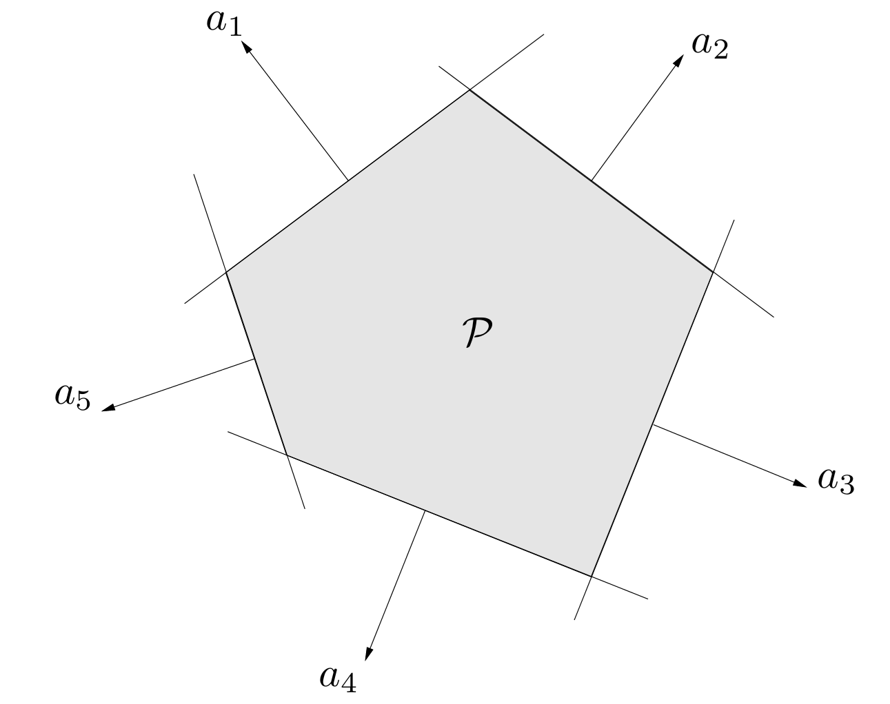
Ejemplo 8 Símplex
El \(p\)-símplex estándar en \(\RR^{p}\) es el conjunto \[ \Delta^{p-1}=\left\{\xx\in\RR^p \left|\;\sum_{i=1}^p x_i=1,\; x_i\geq 0\, (\forall i=1,\ldots,p)\right.\right\}. \]
Es un poliedro, ya que puede expresarse como la intersección de:
- El hiperplano definido por \(\sum_{i=1}^p x_i=1\).
- Los \(p\) semiespacios definidos por \(x_i\geq 0\), con \(i=1,\ldots,p\).
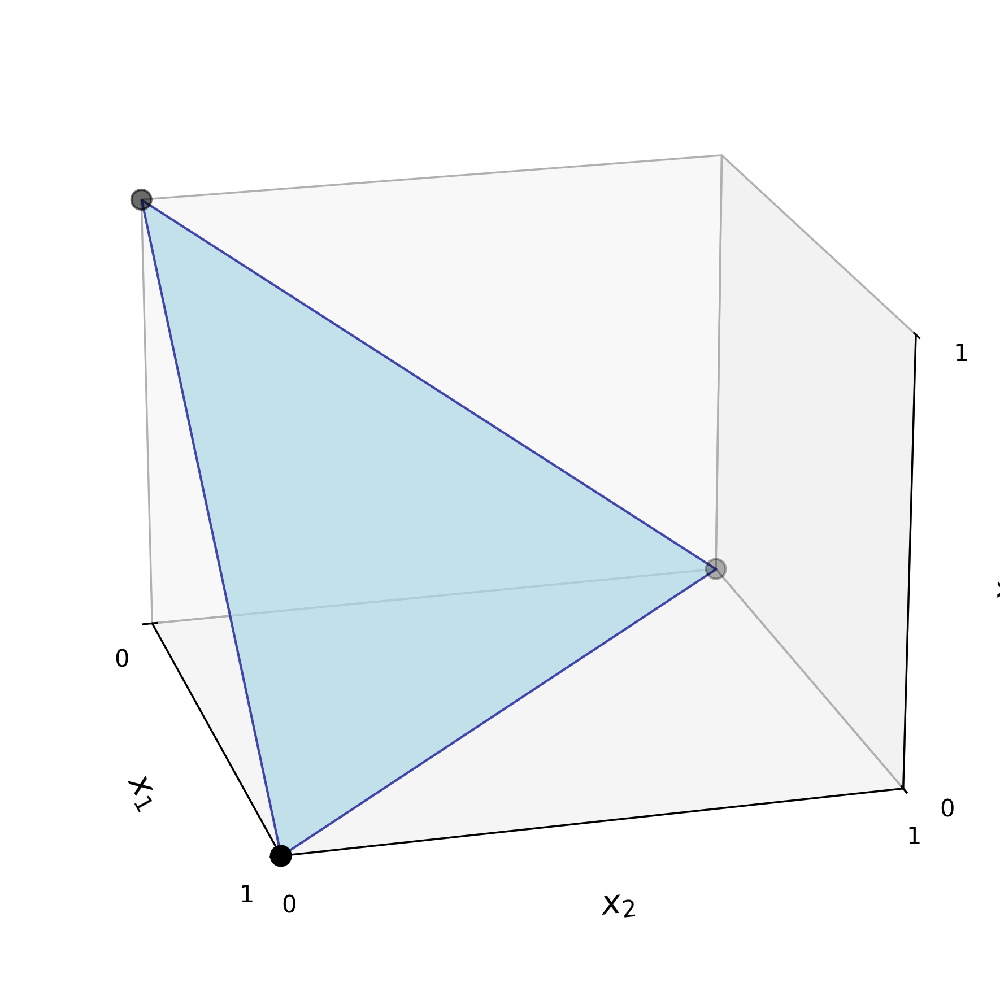
Conos normales
En muchos problemas de optimización, especialmente aquellos en los que las soluciones están restringidas a un conjunto convexo, es esencial entender cómo se comportan las direcciones “externas” al conjunto en torno a un punto dado.
El cono normal es una herramienta geométrica fundamental para describir esas direcciones. Nos permitirá luego expresar condiciones que caracterizan soluciones óptimas a partir de información local del conjunto factible.
Definición 7. (Cono normal) Sean \(\Omega\subset\RR^p\) un conjunto convexo y \(\xx_0\in\Omega\). El cono normal de \(\Omega\) en \(\xx\) se define como \[ N_{\Omega}(\xx_0) := \{\dd\in\RR^p \mid \langle\dd,\xx-\xx_0\rangle_2\leq 0,\;\forall\xx\in\Omega\}. \]
Si bien la expresión \(\langle \dd,\xx-\xx_0 \rangle_2\) puede escribirse como \(\dd^\top(\xx-\xx_0)\), la notación con producto interno permite una rápida interpretación de este concepto. Si usamos la propiedad \(\langle\uu,\vv\rangle_2 =\|\uu\|_2\|\vv\|_2\cos \alpha\), donde \(\alpha\) es el ángulo entre \(\uu\) y \(\vv\), podemos decir que \(\dd\in N_{\Omega}(\xx_0)\) si \[ \|\dd\|_2\|\xx-\xx_0\|_2\cos \alpha \leq 0, \] con \(\alpha\) el ángulo entre los vectores \(\dd\) y \(\xx-\xx_0\). Esto es cierto si \(\frac{\pi}{2}\leq \alpha\leq\pi\) (ver Figura 9).
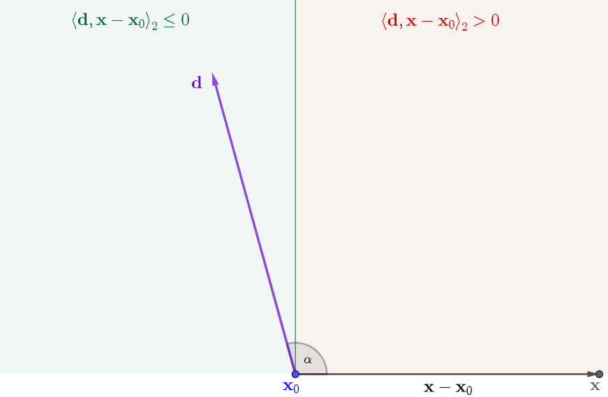
El cono normal consta de aquellas direcciones que forman un ángulo obtuso o recto con todas las direcciones \(\xx-\xx_0\), junto con la dirección nula \(\dd=\bfzero\).
Para entender esta definición, vamos a ver algunos ejemplos.
Ejemplo 9 Cono normal a un punto interior
Si \(\xx_0\) es un punto interior de \(\Omega\), el cono normal contiene únicamente el vector cero:
\[
N_{\Omega}(\xx_0) = \{\mathbf{0}\}.
\]
Esto se debe a que \(\xx-\xx_0\) puede ser cualquier dirección y, en consecuencia, no es posible que \(\dd\neq\bfzero\) forme un ángulo obtuso o recto con todas las direcciones \(\xx-\xx_0\). En efecto, si \(\dd\neq\mathbf{0}\), podemos tomar un \(\delta>0\) lo suficientemente pequeño para que \(\xx=\xx_0+\delta\dd\in\Omega\), tal que \[ \langle \dd,\xx-\xx_0\rangle_2=\langle\dd,\delta\dd\rangle_2=\delta\|\dd\|_2^2\geq 0. \]
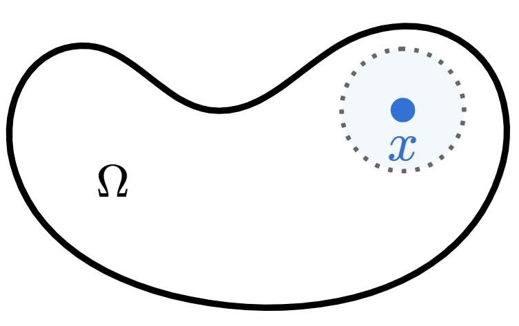
Ejemplo 10 Cono normal a un hiperplano
Sea \(\aa\in\RR^p\), \(\aa\neq\mathbf{0}\), y \(b\in\RR\). Consideramos el hiperplano \[ \Omega:=\{\xx\in\RR^p \mid \aa^\top\xx=b\}. \]
El cono normal a un punto \(\xx_0\in\Omega\) es la recta con dirección \(\aa\). Esto es, \[ N_{\Omega}(\xx_0)=\{\lambda\aa \mid \lambda\in\RR\}. \]
La verificación se deja como tarea (📝 Ejercicio 7).
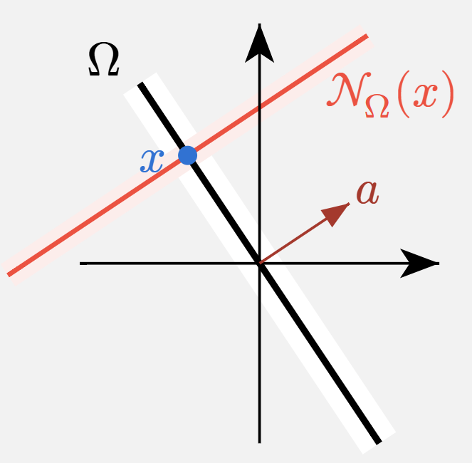
Ejemplo 11 Cono normal a un semiespacio
Sean \(\aa\in\RR^p\), \(\aa\neq\mathbf{0}\), y \(b\in\RR\). Definimos el semiespacio \[ \Omega:=\{\xx\in\RR^p \mid \aa^\top\xx\leq b\}. \]
Si \(\xx_0\) está en el interior de \(\Omega\), \(\aa^\top\xx_0<b\), el cono normal es \(N_{\Omega}(\xx_0)=\{\mathbf{0}\}\).
Si \(\xx_0\) está en la frontera de \(\Omega\), \(\aa^\top\xx_0=b\), resulta \[ N_{\Omega}(\xx_0)=\{\lambda\aa \mid \lambda\in\RR_0^+\}. \]
La diferencia con el ejemplo anterior radica en que ahora el cono normal es una semirrecta.
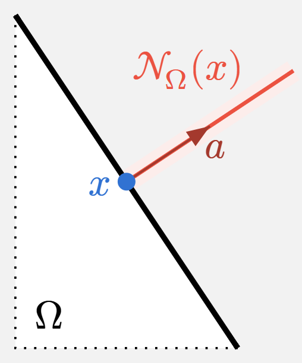
Ejemplo 12 Cono normal a la intersección de dos semiespacios
Sean \(\aa_1,\aa_2\in\RR^p\) no nulos, y \(b_1,b_2\in\RR\). Definimos la intersección de dos semiplanos como \[ \Omega:=\{\xx\in\RR^p \mid \aa_1^\top\xx\leq b_1\quad\text{y}\quad\aa_2^\top\xx\leq b_2\}. \]
Si \(\xx_0\) está en el interior de \(\Omega\) o en la frontera de solo uno de los semiespacios, el cono normal resulta del ejemplo anterior.
Si \(\xx_0\) está en la intersección de ambas fronteras, \(\aa_1^\top\xx_0=b_1\) y \(\aa_2^\top\xx_0=b_2\), entonces el cono normal es la envolvente cónica de las direcciones \(\aa_1\) y \(\aa_2\). Esto es \[ N_{\Omega}(\xx_0)=\{\lambda_1\aa_1+\lambda_2\aa_2 \mid \lambda_1,\lambda_2\in\RR_0^+\}. \]
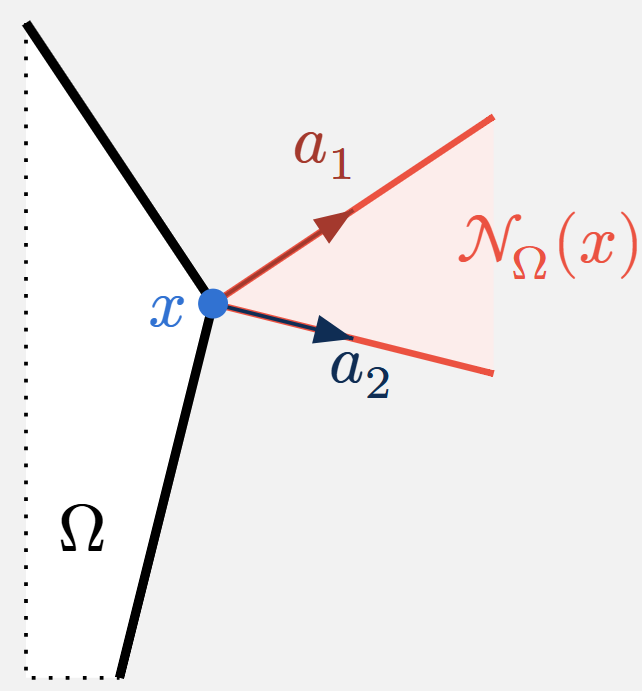
Probaremos este resultado, generalizado a \(r\) semiespacios, en C1-S4.
Funciones convexas
Definición 8. (Función convexa) Una función \(f:\RR^p\rightarrow\RR\) es convexa si \(\text{dom}\,f\) es un conjunto convexo y si verifica \[ f(\theta \xx_1 + (1 - \theta)\xx_2) \leq \theta f(\xx_1) + (1 - \theta)f(\xx_2)\qquad\forall\xx_1,\xx_2\in\text{dom}\,f,\; \forall\theta\in[0,1]. \tag{2} \]
Si la desigualdad es estricta para \(\xx_1\neq \xx_2\) y \(0<\theta<1\), se dice que \(f\) es estrictamente convexa. Además, se dice que \(f\) es cóncava (o estrictamente cóncava) si \(-f\) es convexa (o estrictamente convexa).
Mostrar detalles
La desigualdad de la definición significa que el segmento de recta entre los puntos \((\xx_1, f(\xx_1))\) y \((\xx_2, f(\xx_2))\) se encuentra por encima de la gráfica de \(f\).
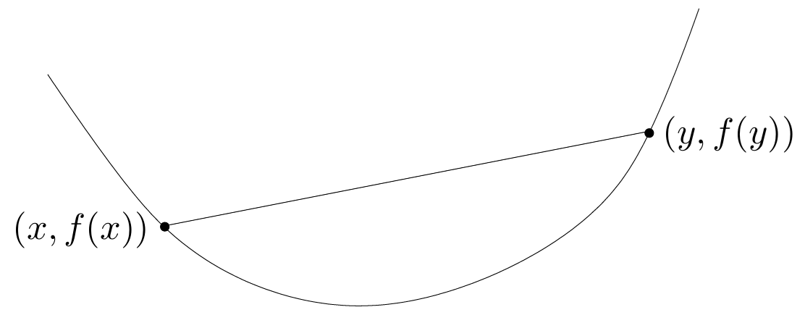
Una función afín verifica la igualdad en la definición, por lo que todas las funciones afines (y, por lo tanto, también las lineales) son tanto convexas como cóncavas. Recíprocamente, una función que es tanto convexa como cóncava es siempre una función afín.
Una función es convexa si y solo si, para todo \(\xx\in\text{dom}\,f\) y \(\vv\in\RR^p\), la restricción \(g(t)=f(\xx+t\vv)\) es convexa en su dominio \(\{t \mid \xx+t\vv\in\text{dom}\,f\}\).
Importante
La desigualdad de la Definición 8 se puede extender a combinaciones convexas. Es decir, si \(f\) es convexa, se cumple \[ f\Big(\sum_{i=1}^k\theta_i\xx_i\Big)\leq\sum_{i=1}^k\theta_i f(\xx_i),\qquad\sum_{i=1}^k\theta_i=1,\;\theta_i\geq 0. \tag{3} \]
Esta es la versión discreta de la desigualdad de Jensen (ver Ejercicio 13).
Ejemplo 13 Función cuadrática de una variable
Vamos a probar la convexidad de la función \(f(x)=x^2\). Para \(\theta\in[0,1]\) resulta \[ \begin{align} f(\theta x_1+(1-\theta)x_2)&=(\theta x_1+(1-\theta)x_2)^2\\[1 pt] &=\theta^2x_1^2+2\theta(1-\theta)x_1x_2+(1-\theta)^2x_2^2 \end{align} \]
Entonces \[ \begin{align} f(\theta x_1+(1-\theta)x_2)-\left[\theta f(x_1)+(1-\theta) f(x_2)\right]&=(\theta^2-\theta)x_1^2+2\theta(1-\theta)x_1x_2+(\theta^2-\theta)x_2^2\\ &=-\theta(1-\theta)(x_1^2-2x_1x_2+x_2^2)\\ &=-\theta(1-\theta)(x_1-x_2)^2\\ &\leq 0 \end{align} \]
lo cual concluye la prueba.
El epígrafo de una función \(f:\RR^p\to\RR\) se define como \[ \text{epi}\,f = \{(\xx, t) \mid \xx \in \text{dom}\,f, f(\xx) \leq t\}, \]
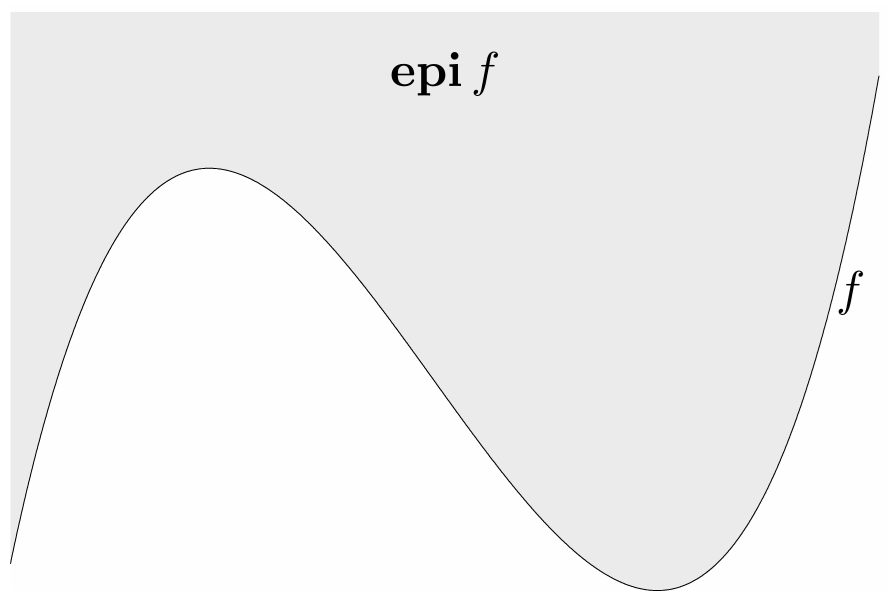
La relación entre conjuntos convexos y funciones convexas es a través del epígrafo:
Una función es convexa si y solo si su epígrafo es un conjunto convexo.
La prueba es sencilla (📝Ejercicio 9). De manera análoga, una función es cóncava si y solo si su hipógrafo, definido como \[ \text{hypo}\,f = \{(\xx, t) \mid t \leq f(\xx)\}, \] es un conjunto convexo.
Condiciones de convexidad
Probar que una función es convexa utilizando la Definición 8 puede ser tedioso. Afortunadamente, existen criterios basados en sus derivadas. Estos permiten caracterizar la convexidad en términos del comportamiento local de la función, ya sea a través del gradiente (primera derivada) o de la matriz Hessiana (segunda derivada).
Primero, recordemos que:
El gradiente \(\nabla f:\RR^p\to\RR^p\) se define como \[ \nabla f(\xx):=\left(\frac{\partial f}{\partial x_1}(\xx),\ldots,\frac{\partial f}{\partial x_p}(\xx_0\right). \]
La matriz Hessiana \(\nabla^2 f:\RR^p\to\RR^{p\times p}\) se define como \[ \nabla^2 f(\xx):=\begin{pmatrix} \displaystyle \frac{\partial^2 f}{\partial x_1^2}(\xx) & \displaystyle \frac{\partial^2 f}{\partial x_1 \partial x_2}(\xx) & \ldots & \displaystyle \frac{\partial^2 f}{\partial x_1 \partial x_p}(\xx) \\ \displaystyle \frac{\partial^2 f}{\partial x_2 \partial x_1}(\xx) & \displaystyle \frac{\partial^2 f}{\partial x_2^2}(\xx) & \ldots & \displaystyle \frac{\partial^2 f}{\partial x_2 \partial x_p}(\xx) \\ \vdots & \vdots & \ddots & \vdots \\ \displaystyle \frac{\partial^2 f}{\partial x_p \partial x_1}(\xx) & \displaystyle \frac{\partial^2 f}{\partial x_p \partial x_2}(\xx) & \ldots & \displaystyle \frac{\partial^2 f}{\partial x_p^2}(\xx) \end{pmatrix} \]
Importante
Diremos que \(f:\RR^p\to\RR\) es diferenciable si su gradiente \(\nabla f\) existe en todo su dominio, y que es dos veces diferenciable si además su hessiana \(\nabla^2 f\) existe en todo su dominio. En ambos casos, asumimos que dicho dominio es un conjunto abierto.
Ahora bien, si una función \(f:\RR^p\to\RR\) es dos veces diferenciable, la expansión de Taylor nos permite escribir, para \(\dd\in\RR^p\), la aproximación
\[ f(\xx+\dd)\approx f(\xx)+\nabla f(\xx)^\top\dd+\frac{1}{2}\dd^\top \nabla^2 f(\xx)\,\dd \]
Esta expansión muestra cómo el valor de la función en un punto cercano puede aproximarse mediante el gradiente y la Hessiana, lo que proporciona la base para analizar propiedades locales de la función.
A continuación presentaremos, en primer lugar, un lema con propiedades de funciones convexas de una variable, y luego los teoremas que establecen las condiciones de convexidad de primer y segundo orden, basadas en el gradiente y en la matriz Hessiana, respectivamente.
Lema 1. (Convexidad en una variable) Sea \(\varphi:[a,b]\to\RR\) una función convexa. Se verifican las siguientes propiedades:
Para \(a\leq t_1<t_2<t_3\leq b\), se cumple \[ \frac{\varphi(t_2)-\varphi(t_1)}{t_2-t_1} \leq \frac{\varphi(t_3)-\varphi(t_1)}{t_3-t_1} \leq \frac{\varphi(t_3)-\varphi(t_2)}{t_3-t_2}. \] Es decir, las pendientes de las rectas secantes son no decrecientes.
El límite \[ \varphi'_+(t_0)=\lim_{h\downarrow 0}\frac{\varphi(t_0+h)-\varphi(t_0)}{h} \] existe (posiblemente \(-\infty\)) en todo \(t_0\). Además, \[ \varphi(t)\ \ge\ \varphi(t_0)+(t-t_0)\,\varphi'_+(t_0)\qquad \forall t\ge t_0. \]
Si \(\varphi\) es diferenciable en \(t_0\), entonces \[ \varphi(t)\ \ge\ \varphi(t_0)+(t-t_0)\,\varphi'(t_0)\qquad \forall t\ge t_0. \]
Si \(\varphi\) es dos veces diferenciable en \((a,b)\), entonces \[ \varphi''(t)\geq 0\qquad\forall t\in(a,b). \]
Mostrar detalles
Fijemos \(a\leq t_1<t_2<t_3\leq b\). Como \(\varphi\) es convexa, utilizaremos (2) para \(t_1\) y \(t_3\) con \[ \theta=\frac{t_3-t_2}{t_3-t_1}\in[0,1]. \]
Dado que \[ \frac{t_3-t_2}{t_3-t_1}t_1+\frac{t_2-t_1}{t_3-t_1}t_3=\frac{t_2(t_3-t_1)}{t_3-t_1}=t_2. \]
obtenemos el siguiente resultado: \[ \varphi(t_2)\le \frac{t_3-t_2}{t_3-t_1}\,\varphi(t_1)+\frac{t_2-t_1}{t_3-t_1}\,\varphi(t_3). \]
Reordenando: \[ \begin{align} \varphi(t_2)-\varphi(t_1)&\leq\frac{t_1-t_2}{t_3-t_1}\varphi(t_1)+\frac{t_2-t_1}{t_3-t_1}\,\varphi(t_3)\\ \varphi(t_2)-\varphi(t_1) &\leq \frac{t_2-t_1}{t_3-t_1}(\varphi(t_3)-\varphi(t_1)) \\ \frac{\varphi(t_2)-\varphi(t_1)}{t_2-t_1} &\leq \frac{\varphi(t_3)-\varphi(t_1)}{t_3-t_1}. \end{align} \]
De manera simétrica se obtiene la otra desigualdad. \(\qquad\blacksquare\)
Dado que \(\varphi_+'(t_0)\) es un límite de pendientes de rectas secantes y que, de 1, dichas pendientes son monótononas, podemos afirmar que dicho límite o bien existe o bien es \(-\infty\). De hecho, podemos escribir \[ \frac{\varphi(t)-\varphi(t_0)}{t-t_0}\ \ge\ \varphi'_+(t_0)\qquad\forall t>t_0. \]
Esto último es equivalente a \[ \varphi(t)\ge \varphi(t_0)+(t-t_0)\varphi'_+(t_0)\qquad\forall t\geq t_0. \]
En caso de ser \(\varphi\) diferenciable en \(t_0\), \(\varphi'(t_0)=\varphi_+'(t_0)\) y la desigualdad anterior resulta en
\[ \varphi(t)\ge \varphi(t_0)+(t-t_0)\varphi'(t_0)\qquad\forall t\geq t_0.\qquad\blacksquare \]
Sea \(\varphi\) es dos veces diferenciable en \((a,b)\). Para \(t_0\) fijo consideremos \[ g(h)=\frac{\varphi(t_0-h)-2\varphi(t_0)+\varphi(t_0+h)}{h^2}. \]
La convexidad implica \(g(h)\ge 0\) para todo \(h>0\). En efecto, la no negatividad del numerador resulta de aplicar la desigualdad de Jensen (3) a \(\xx_1=t_0-h\), \(\xx_2=t_0\) y \(\xx_3=t_0+h\) con \(\theta_1=\theta_2=\theta_3=\frac{1}{3}\): \[ \begin{align} \varphi(t_0)&\leq\frac{1}{3}\left(\varphi(t_0-h)+\varphi(t_0)+\varphi(t_0+h)\right)\\ 0&\leq \varphi(t_0-h)+\varphi(t_0)+\varphi(t_0+h)-3\varphi(t_0) \\[2 pt] 0&\leq \varphi(t_0-h)-2\varphi(t_0)+\varphi(t_0+h). \end{align} \]
Pero \(g(h)\to \varphi''(t_0)\) cuando \(h\to 0\). Luego, \(\varphi''(t_0)\ge 0\). \(\qquad\blacksquare\)
Teorema 1. (Condición de primer orden para convexidad) Sea \(f:\RR^p\to\RR\) una función diferenciable. \(f\) es convexa si y solo si \(\text{dom}\,f\) es convexo y \[ f(\xx_2)\geq f(\xx_1)+\langle\nabla f(\xx_1),\xx_2-\xx_1\rangle_2\qquad\forall\xx_1,\xx_2\in\text{dom}\,f. \tag{4} \]
Mostrar detalles
La función afín de \(\xx_2\), definida por \(f(\xx_1) + \langle \nabla f(\xx_1), \xx_2 - \xx_1 \rangle_2\), es la aproximación lineal de \(f\) cerca de \(\xx_1\). En consecuencia, la desigualdad del teorema implica que la aproximación lineal de \(f\) en \(\xx_1\) es un subestimador global de \(f\).
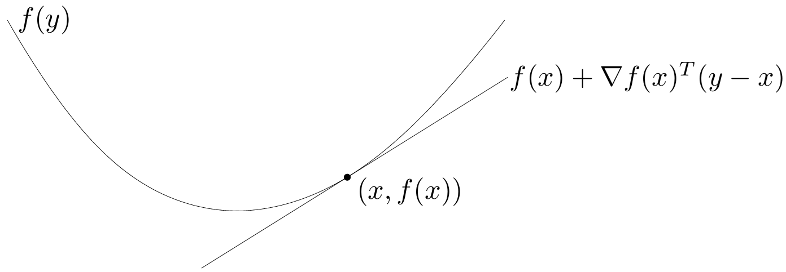
La convexidad estricta también puede caracterizarse por una condición de primer orden: \(f\) es estrictamente convexa si y solo si \(\text{dom}\,f\) es convexo y \[ f(\xx_2) > f(\xx_1) + \langle \nabla f(\xx_1), \xx_2 - \xx_1 \rangle_2 \] para todo \(\xx_1, \xx_2 \in \text{dom}\,f\), con \(\xx_1 \neq \xx_2\).
Para funciones cóncavas, tenemos la caracterización correspondiente: \(f\) es cóncava si y solo si \(\text{dom}\,f\) es convexo y \[ f(\xx_2) \leq f(\xx_1) + \langle \nabla f(\xx_1), \xx_2 - \xx_1 \rangle_2 \] para todo \(\xx_1, \xx_2 \in \text{dom}\,f\).
(\(\Rightarrow\)) Supongamos que \(f\) es convexa. Fijemos \(\xx_1,\xx_2 \in \text{dom}\,f\) y definamos \[ \varphi(t) = f(\xx_1 + t(\xx_2-\xx_1)), \qquad t\in[0,1]. \]
Probemos que \(\varphi\) es convexa como función de una variable. Para \(t_1,t_2\in[0,1]\) y \(\theta\in[0,1]\), tenemos que \[ \varphi(\theta t_1+(1-\theta)t_2) = f\big(\xx_1 + (\theta t_1+(1-\theta)t_2)(\xx_2-\xx_1)\big). \tag{5} \]
En el lado derecho, notemos que \[ \xx_1 + (\theta t_1+(1-\theta)t_2)(\xx_2-\xx_1) = \theta\big(\underbrace{\xx_1+t_1(\xx_2-\xx_1)}_{\yy_1}\big) + (1-\theta)\big(\underbrace{\xx_1+t_2(\xx_2-\xx_1)}_{\yy_2}\big). \]
Denotando \(\yy_i=\xx_1+t_i(\xx_2-\xx_1)\), tal que \(f(\yy_i)=\varphi(t_i)\), vamos a reescribir (5) para poder utilizar la convexidad de \(f\): \[ \begin{align} \varphi(\theta t_1+(1-\theta)t_2) &= f\big(\theta \yy_1+(1-\theta)\yy_2\big) \\ &\leq \theta f(\yy_1)+(1-\theta)f(\yy_2)\\[2 pt] &= \theta \varphi(t_1)+(1-\theta)\varphi(t_2). \end{align} \]
Esto prueba que \(\varphi\) es convexa en \([0,1]\). Además, la diferenciabilidad de \(f\) implica que \(\varphi\) es diferenciable y \[ \varphi'(t)=\langle\nabla f(\xx_1+t(\xx_2-\xx_1)), \xx_2-\xx_1\rangle_2. \]
Podemos aplicar el Lema 1 con \(t=1\) y \(t_0=0\); resulta \[ \begin{align} \varphi(1)&\geq\varphi(0)+\varphi'(0) \\ f(\xx_2)&\geq f(\xx_1) + \langle\nabla f(\xx_1), \xx_2-\xx_1\rangle_2. \end{align} \]
(\(\Leftarrow\)) Supogamos que es cierta la desigualdad (4) del enunciado y probemos que \(f\) es convexa. Sean \(\xx_1,\xx_2\in\text{dom}\,f\) y \(\theta\in[0,1]\), definamos \[ \xx_\theta = (1-\theta)\xx_1+\theta \xx_2. \]
Aplicamos la desigualdad dos veces: para \((\xx_{\theta},\xx_1)\) y para \((\xx_{\theta},\xx_2)\). Resulta \[ f(\xx_1)\geq f(\xx_\theta)+\langle\nabla f(\xx_\theta),\,\xx_1-\xx_\theta\rangle_2, \] \[ f(\xx_2)\geq f(\xx_\theta)+\langle\nabla f(\xx_\theta),\,\xx_2-\xx_\theta\rangle_2. \]
Multiplicando la primera desigualdad por \((1-\theta)\) y la segunda por \(\theta\), al sumarlas obtenemos \[ \begin{align} (1-\theta)f(\xx_1)+\theta f(\xx_2)&\geq (1-\theta)\Big(f(\xx_\theta)+\langle\nabla f(\xx_\theta),\,\xx_1-\xx_\theta\rangle_2\Big) +\theta\Big(f(\xx_\theta)+\langle\nabla f(\xx_\theta),\,\xx_2-\xx_\theta\rangle_2\Big) \\ &= f(\xx_\theta)+\langle\nabla f(\xx_\theta),(1-\theta)(\xx_1-\xx_\theta)+\theta (\xx_2-\xx_\theta)\rangle_2\\[2pt] &=f(\xx_\theta)+\langle\nabla f(\xx_\theta),\underbrace{(1-\theta)\xx_1+\theta\xx_2}_{\xx_\theta}-\xx_\theta\rangle_2\\ &=f(\xx_\theta)+\langle\nabla f(\xx_\theta),\bfzero\rangle_2\\[2pt] &=f(\xx_\theta). \end{align} \]
Al reemplazar \(\xx_\theta\) por su expresión, se obtiene finalmente \[ (1-\theta)f(\xx_1)+\theta f(\xx_2)\geq f((1-\theta)\xx_1+\theta \xx_2), \]
que es precisamente la definición de convexidad. \(\qquad\blacksquare\).
El siguiente gráfico muestra la interpretación geométrica tanto de la Definición 8 de convexidad como del Teorema 1 de condición de primer orden.
Una consecuencia importante del Teorema 1 es la siguiente: si para algún \(\xx_0\in\text{dom}\,f\) se verifica \(\nabla f(\xx_0) =\bfzero\), entonces \(f(\xx) \geq f(\xx_0)\) para todo \(\xx \in \text{dom}\,f\). Es decir, podemos afirmar que:
Si \(f\) es una función convexa, cuyo \(\text{dom}\,f\) es un conjunto abierto, y para algún \(\xx\) se verifica \(\nabla f(\xx)=\bfzero\), entonces \(\xx\) es un mínimo global de \(f\).
Teorema 2. (Condición de segundo orden para convexidad) Sea \(f:\RR^p\to\RR\) una función dos veces diferenciable. \(f\) es convexa si y solo si \(\text{dom}\,f\) es convexo y \[ \nabla^2 f(\xx)\succeq 0\qquad\forall\xx\in\text{dom}\,f. \]
Mostrar detalles
- Para funciones de una variable, la condición se reduce a \(f''(x)\geq 0\), lo cual implica que la derivada \(f'(x)\) es no decreciente.
La convexidad estricta también puede caracterizarse por una condición de segundo orden, pero de manera parcial: si \(\text{dom}\,f\) es convexo y \(\nabla^2 f\succ 0\) para todo \(\xx\in\text{dom}\,f\), entonces \(f\) es estrictamente convexa. El recíproco no es cierto: por ejemplo, \(f(x)=x^4\) es estrictamente convexa pero \(f''(0)=0\).
Para funciones cóncavas, tenemos la caracterización correspondiente: \(f\) es cóncava si y solo si \(\text{dom}\,f\) es convexo y \(\nabla^2 f(\xx)\preceq 0\) para todo \(\xx\in\text{dom}\,f\).
(\(\Rightarrow\)) Para \(\xx\) y \(\dd\) arbitrarios, definimos \(\psi:\RR\to\RR\) como \[ \psi(t)=f(\xx+t\dd) \]
Como \(f\) es convexa y dos veces diferenciable, podemos afirmar que también \(\psi\) es convexa y dos veces diferenciable en \(t\). Por lo tanto, el Lema 1 nos asegura que \(\psi''(t)\geq 0\) para todo \(t\). Derivando, obtenemos \[ \psi'(t)=\nabla f(\xx+t\,\dd)^\top\dd, \] \[ \psi''(t)=\dd^\top\nabla^2f(\xx+t\,\dd)\,\dd. \]
En particular, para \(t=0\) resulta \(\dd^\top\nabla^2f(\xx)\,\dd\geq 0\). Como \(\dd\) es arbitrario, esto implica \(\nabla^2f(\xx)\succeq 0\) para todo \(\xx\in\text{dom}\,f\).
(\(\Leftarrow\)) Partimos de la fórmula de Taylor con resto integral: \[ f(\xx+\dd)=f(\xx)+\nabla f(\xx)^\top\dd+\int_0^1 (1-t)\, \dd^\top \nabla^2 f(\xx+t\,\dd)\,\dd\,dt. \]
Como, por hipótesis, la Hessiana \(\nabla^2f\) es semidefinida positiva, el integrando es no negativo. En consecuencia, \[ f(\xx+\dd)\geq f(\xx)+\nabla f(\xx)^\top\dd, \]
lo cual es la condición de primer orden (Teorema 1) aplicada a \(\xx_1=\xx\) y \(\xx_2=\xx+\dd\). Luego, \(f\) es convexa. \(\qquad\blacksquare\)
Ejemplo 14 Función cuadrática de varias variables
Consideremos la función cuadrática \(f:\RR^p\to\RR\) definida por
\[ f(\xx)=\frac{1}{2}\xx^\top A\xx+\bb^\top\xx+c, \]
donde \(A\in\SS^p:=\{X\in\RR^{p\times p} \mid X=X^\top\}\), \(\bb\in\RR^p\) y \(c\in\RR\). Dado que \(\nabla^2 f(\xx)=A\) para todo \(\xx\), podemos afirmar que \(f\) es convexa si y sólo si \(A\succeq 0\).
Así, por ejemplo, la función \(f:\RR^2\to\RR\) definida por
\[ f(x,y)=\frac{1}{2}\begin{pmatrix}x&y\end{pmatrix}\begin{pmatrix}2&1\\1&3\end{pmatrix}\begin{pmatrix}x\\ y\end{pmatrix}=\frac{1}{2}(2x^2+2xy+3y^2) \]
es convexa, ya que \(\xx^\top A\xx=2x^2+2xy+3y^2=x^2+(x+y)^2+2y^2\geq 0\) para todo \((x,y)\in\RR^2\), lo cual significa que \(A\succeq 0\).
Mostrar código
import numpy as np
import matplotlib.pyplot as plt
from mpl_toolkits.mplot3d import Axes3D # para 3D
# Definir la matriz A (simétrica)
A = np.array([[2, 1],
[1, 3]])
# Crear una malla de puntos en R^2
x = np.linspace(-3, 3, 100)
y = np.linspace(-3, 3, 100)
X, Y = np.meshgrid(x, y)
# Evaluar la función f(x) = 1/2 x^T A x
Z = 0.5 * (A[0,0]*X**2 + (A[0,1] + A[1,0])*X*Y + A[1,1]*Y**2)
# 📈:
fig = plt.figure(figsize=(8,6))
ax = fig.add_subplot(111, projection='3d')
ax.plot_surface(X, Y, Z, cmap='viridis', alpha=0.8)
ax.set_xlabel('x')
ax.set_ylabel('y')
plt.show()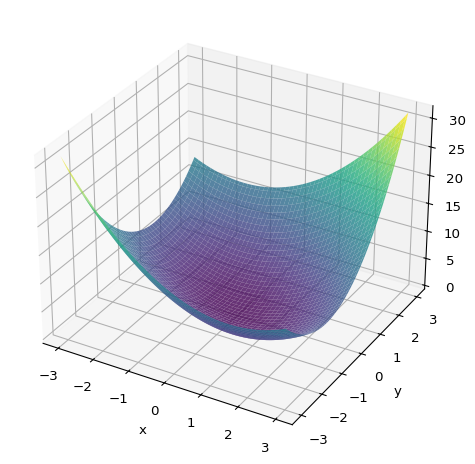
Ejemplo 15 Norma en \(\RR^p\)
Toda norma \(\|\cdot\|\) en \(\RR^p\) es una función convexa. En efecto, si \(f(\xx)=\|\xx\|\), la desigualdad de la Definición 8 es inmediata de la desigualdad triangular: \[ f(\theta\xx_1+(1-\theta)\xx_2)=\|\theta\xx_1+(1-\theta)\xx_2\|\leq\theta\|\xx_1\|+(1-\theta)\|\xx_2\|. \]
Analicemos las condiciones de convexidad para el caso particular de la norma euclidiana \(f(\xx)=\|\xx\|_2=(\xx^\top\xx)^{1/2}\). Resultan \[ \nabla f(\xx)=\frac{\xx}{\|\xx\|_2}\qquad\mbox{y}\qquad\nabla^2 f(\xx)=\frac{I_p}{\|\xx\|_2}-\frac{\xx\xx^\top}{\|\xx\|_2^3}. \]
Condición de primer orden: \[ \begin{align} f(\xx_2)&\geq f(\xx_1)+\frac{1}{\|\xx_1\|_2}\langle \xx_1,\xx_2-\xx_1\rangle_2\\ \|\xx_2\|_2 & \geq \|\xx_1\|_2+\frac{\langle \xx_1,\xx_2\rangle_2}{\|\xx_1\|_2}-\|\xx_1\|_2\\[2pt] \langle \xx_1,\xx_2\rangle_2&\leq \|\xx_1\|_2\|\xx_2\|_2. \end{align} \] La última expresión es cierta (desigualdad de Cauchy Schwarz).
Condición de segundo orden: para todo \(\xx\in\RR^p\) y \(\vv\in\RR^p\) se tiene \[ \begin{align} \vv^\top \nabla^2 f(\xx)\,\vv&=\vv^T\left(\frac{I_p}{\|\xx\|_2}-\frac{\xx\xx^\top}{\|\xx\|_2^3}\right)\vv\\ &= \frac{\|\vv\|_2^2}{\|\xx\|_2}-\frac{(\vv^\top\xx)^2}{\|\xx\|_2^3}\\[4pt] &\geq \underbrace{\frac{\|\vv\|_2^2}{\|\xx\|_2}-\frac{\|\xx\|_2^2\|\vv\|_2^2}{\|\xx\|_2^3}}_{=0} \end{align} \] Por lo tanto, \(\nabla^2 f(\xx)\succeq 0\), tal como esperábamos.
Operaciones que preservan convexidad
En esta sección describimos algunas operaciones que preservan la convexidad o concavidad de funciones, o que permiten construir nuevas funciones convexas y cóncavas (📝 las verificaciones se piden en Ejercicio 14).
Sumas ponderadas no negativas. Si \(f\) es una función convexa y \(\alpha \geq 0\), entonces la función \(\alpha f\) es convexa. Si \(f_1\) y \(f_2\) son ambas funciones convexas, entonces su suma \(f_1 + f_2\) también lo es. Combinando estas dos propiedades, se obtiene que el conjunto de funciones convexas es en sí mismo un cono convexo: una suma ponderada no negativa de funciones convexas, \[ f = w_1 f_1 + \cdots + w_m f_m,\qquad w_i\geq 0, \] es convexa. De manera similar, una suma ponderada no negativa de funciones cóncavas es cóncava.
Composición con una aplicación afín. Sean \(f:\RR^p\to\RR\), \(A\in\RR^{p\times m}\) y \(\bb\in\RR^p\). Definimos \(g:\RR^m\to\RR\) como \[ g(\xx):=f(A\xx+\bb) \] con \(\text{dom}\,g = \{\xx \mid A\xx + \bb \in\text{dom}\,f\}\). Entonces, \(g\) conserva la convexidad o concavidad de \(f\).
Máximo puntual. Si \(f_1\) y \(f_2\) son funciones convexas, entonces su máximo puntual \(f\), definido por \[ f(\xx) = \max\{f_1(\xx), f_2(\xx)\}, \] con \(\text{dom}\,f = \text{dom}\,f_1 \cap \text{dom}\,f_2\), también es convexa. Además, este resultado se puede extender a: si \(f_1,\dots,f_m\) son funciones convexas, entonces su máximo puntual, definido por \(f(\xx)=\max\{f_1(\xx), \ldots, f_m(\xx)\}\), también lo es.
Supremo puntual. La propiedad del máximo puntual se extiende al supremo puntual sobre un conjunto infinito de funciones convexas. Si para \(i\in\mathcal{A}\), donde \(\mathcal{A}\) es un conjunto de índices, se tiene que \(f_i(\xx)\) es convexa, entonces la función \(f\) definida por \[ f(\xx) = \sup_{i \in \mathcal{A}} f_i(\xx) \] también es convexa en \(\xx\). Aquí, el dominio de \(f\) es \[ \text{dom}\,f = \{\xx \mid \xx \in \text{dom}\,f_i (\forall i \in \mathcal{A}),\; \sup_{i \in \mathcal{A}} f_i(\xx) < \infty\}. \] De manera similar, el ínfimo puntual de un conjunto de funciones cóncavas es una función cóncava.
Ejemplo 16 Suma de las mayores componentes de un vector
Para \(\xx\in\RR^p\), se denota con \(x_{[i]}\) la \(i\)-ésima componente de mayor valor de \(\xx\). Es decir, podemos escribir \[ x_{[1]}\geq x_{[2]}\geq\ldots\geq x_{[p]}. \]
Para \(r\leq n\) se define \(f:\RR^p\to\RR\) como \[ f(\xx)=\sum_{i=1}^rx_{[i]}. \]
Esta función puede ser reescrita como \[ f(\xx)=\max\left\{x_{i_1}+\cdots+x_{i_n} \mid 1\leq i_1 \leq \ldots\leq i_r\leq n \right\}; \]
esto es, el máximo de todas las posibles sumas de \(r\) diferentes componentes de \(\xx\). Dado que tales sumas son funciones lineales (y, por lo tanto, convexas), concluimos que \(f\) es convexa.
Problemas de optimización convexa
Definición 9. (Problema de optimización convexa) Un problema de optimización convexa es de la forma \[ \begin{array}{ll} \text{minimizar } & f(\xx)\\ \text{sujeto a } & \xx\in\left\{\xx\in\RR^p\left|\;\begin{array}{ll} g_i(\xx)\leq 0,& i=1,\ldots,r\\ \aa_j^\top \xx-b_j=0, & j=1,\ldots,m \end{array}\right.\right\}, \end{array} \]
donde tanto la función objetivo \(f\) como las funciones de restricción de desigualdad \(g_1, \dots, g_r\) son funciones convexas.
Comparando con el problema en forma estándar general, podemos ver que las restricciones de igualdad, \(h_i(\xx)=\aa_j^\top \xx-b_i=0\), son funciones afines. Esto permite asegurar inmediatamente que:
El conjunto factible \(\Omega\) de un problema de optimización convexa es convexo.
¿Por qué?
En efecto, es la intersección de los siguientes conjuntos convexos:
- \(\bigcap_{i=0}^r\text{dom}\,f_i\).
- \(r\) conjunto de subnivel \(\{\xx \mid g_i(\xx)\leq 0\}\).
- \(m\) hiperplanos \(\{\xx \mid \aa_i^\top\xx-b_i=0\}\).
También nos referiremos a \[ \begin{array}{ll} \text{maximizar } & f(\xx)\\ \text{sujeto a } & \xx\in\left\{\xx\in\RR^p\left|\;\begin{array}{ll} g_i(\xx)\leq 0,& i=1,\ldots,r\\ \aa_j^\top \xx-b_i=0, & j=1,\ldots,m \end{array}\right.\right\}, \end{array} \] como un problema de optimización convexa, si la función objetivo es cóncava y las funciones de restricción de desigualdad \(g_i\) son convexas. De hecho, claramente el problema de maximización cóncava se resuelve minimizando la función convexa \(-f\), razón por la cual todos los resultados y conclusiones que describiremos para el problema de minimización se extienden al caso de maximización.
Ejemplo 17 Minimización de norma con restricción lineal
El problema \[ \begin{array}{ll} \text{minimizar } & \|\xx\|_2^2\\ \text{sujeto a } & \bfone^\top\xx\geq 1, \end{array} \]
es de optimización convexa. La función objetivo es una función convexa (ver Ejemplo 15) y la única restricción está definida a partir de \(g(\xx)=-\bfone^\top\xx=-(x_1+\cdots+x_n)\), la cual es una función lineal (y, por lo tanto, convexa).
Los problemas de optimización convexa tienen una propiedad fundamental que los caracteriza y que explica su gran importancia, la cual enunciaremos a continuación para concluir esta sección. Más adelante estudiaremos cómo la convexidad potencia las condiciones de optimalidad en un punto factible, facilitando su análisis y aplicación.
Teorema 3. (Optimalidad global de un mínimo local en problemas convexos) Si \(\xx\in\Omega\) es un mínimo local de un problema de optimización convexa, entonces \(\xx\) es un punto óptimo (es decir, un mínimo global).
Mostrar detalles
Sobre unicidad:
Si la función objetivo es estrictamente convexa, entonces la solución óptima, en caso de existir, es única.
Sea \(\xx\in\Omega\) un mínimo local de un problema de optimización convexa, entonces, para algún \(R>0\), se tiene que \[ f(\xx)=\inf\{f(\zz) \mid \zz\in\Omega,\; \|\zz-\xx\|_2\leq R\}. \tag{6} \]
Si \(\xx\) no es mínimo global, significa que existe \(\yy\in\Omega\) tal que \(f(\yy)<f(\xx)\). En consecuencia, \(\|\yy-\xx\|_2>R\). Elegimos \[ \zz=(1-\theta)\xx+\theta y,\qquad \theta=\frac{R}{2\|\yy-\xx\|_2}. \]
Por convexidad de \(\Omega\), debe ser \(\zz\in\Omega\). Además, se verifica \[ \|\zz-\xx\|_2=\|\theta(\yy-\xx)\|_2=\frac{R}{2}<R. \]
Es suficiente mostrar que \(f(\zz)<f(\xx)\) para contradecir (6) y concluir la prueba. Para ello, basta usar el hecho de que \(f\) es una función convexa: \[ f(\zz)\leq (1-\theta)f(\xx)+\theta f(\yy)<(1-\theta)f(\xx)+\theta f(\xx)=f(\xx). \qquad\blacksquare \]
Actividades
✏️ ConceptualesMostrar
Muestre que:
- un conjunto afín contiene cualquier combinación afín de sus puntos.
- un conjunto convexo contiene cualquier combinación convexa de sus puntos.
- un cono convexo contiene cualquier combinación cónica de sus puntos.
Pruebe que, si \(C\) es un conjunto afín y \(\xx_0\in C\), entonces \(V:= C-\xx_0\) es un subespacio vectorial que no depende de la elección de \(\xx_0\in C\).
Verifique que, para cualquier conjunto \(C\):
- la envolvente convexa \(\text{conv}\,C\) es un conjunto convexo.
- la envolvente cónica \(\text{cone}\,C\) es un cono convexo.
Sea \(\{S_i\}_{i\in I}\) una familia de conjuntos convexos. Probar que si \(S_i\) es convexo para cada \(i\in I\), entonces \(\bigcap_{i\in I} S_i\) es convexo. ¿Qué ocurre con \(\bigcup_{i\in I} S_i\)?
Sean \(S_1\) y \(S_2\) conjuntos convexos. Muestre que \(S_1\times S_2\) es convexo.
Sea \(S\subset\RR^p\) un conjunto convexo, \(\aa\in\RR^p\) y \(\alpha\in\RR\). Pruebe que los conjuntos \(S+\aa:=\{\xx+\aa \mid \xx\in S\}\) y \(\alpha S:=\{\alpha\xx \mid \xx\in S\}\) son convexos.
(a) Realice la prueba del Ejemplo 12 de cono normal a un hiperplano. Es decir, muestre que \(\dd\in N_{\Omega}(\xx_0)\) si y solo si es de la forma \(\dd=\lambda\aa\) para algún \(\lambda\in\RR\). [Ayuda: para el directo, suponga \(\dd\neq \lambda\aa\) y utilice el hecho de que \(\dd\) puede escribirse como \(\dd=(\xx-\xx_0)+k\aa\), donde \(\xx\) es la proyección de \(\dd\) sobre \(\Omega\) y \(k\in\RR\).]
(b) Considere el subconjunto de \(\RR^2\) determinado por \(x_1+x_2 \leq \frac{1}{2}\), \(x_1\geq 0\), \(x_2\geq 0\), y utilice el resultado de (a) para hallar gráfica y simbólicamente los conos normales en cada vértice y lado del subconjunto.
Muestre que los conjuntos de subnivel de una función \(f:\RR^p\to\RR\) convexa, definidos como \[ C_\alpha:=\{\xx\in\text{dom}\,f \mid f(\xx)\leq\alpha\}, \] son convexos, pero que el recíproco no se cumple. Para esto último utilice algún contraejemplo.
Pruebe que una función es convexa si y solo si su epígrafo es un conjunto convexo.
El requisito separado de que \(\text{dom}\,f\) sea convexo no puede eliminarse de las caracterizaciones de primer o segundo orden de convexidad y concavidad de \(f\). Analice el caso \(f(x)=1/x^2\).
Justifique, utilizando alguno de los teoremas vistos, la convexidad de las siguientes funciones:
- \(f:\RR^+\to\RR: f(x)=\log(1+e^x)\).
- \(f:\RR^p\to\RR: f(\xx)=\aa^\top \xx+b\), \(\aa\in\RR^p\), \(b\in\RR\).
- \(f:\RR^p\to\RR: f(\xx)=\|\xx\|_2^2\).
- \(f:(\RR^+)^p\to\RR: f(\xx)=\sum_{i=1}^p\xx_i\log \xx_i\).
- \(f:(\RR^+)^p\to\RR: f(\xx)=-\sum_{i=1}^p\log \xx_i\).
Dada una matriz \(A\in\RR^{2\times 2}\), sea \(f:\RR^2\to\RR\) la función cuadrática definida por \[ f(x)=\frac{1}{2}\xx^\top A\xx,\qquad A\in\RR^{2\times 2}. \]
- Proponga distintas matrices \(A\), grafique la función y explique qué observa con respecto a su convexidad.
- Determine si \(A\) es semidefinida positiva, negativa o indefinida.
- Calcule los autovalores de \(A\) y explique qué relación observa.
La desigualdad de Jensen establece que si \(\XX\) es una variable aleatoria tal que \(\XX\in\text{dom}\,f\) con probabilidad uno y \(f\) es una función convexa, entonces \[ f(\media \XX)\leq \media f(\XX), \] siempre que la esperanza exista. Hallar una variable aleatoria \(\XX\) que permita recuperar la desigualdad básica de la Definición 8 de función convexa a partir de la desigualdad de Jensen.
Verifique que las operaciones presentadas efectivamente preservan la convexidad de las funciones. [Ayuda: para el caso de supremo puntual, muestre que \(\text{epi}\,f=\bigcap_{i\in\mathcal{A}}\text{epi}\,f_i\).]
Determine cuáles de las operaciones que preservan la convexidad siguen preservándola en el caso de funciones estrictamente convexas, ajustando las hipótesis cuando sea necesario.
Sean \(C\subset\RR^p\) y \(\|\cdot\|\) una norma en \(\RR^p\). La distancia al punto más lejano de \(C\) está dada por \[ f(\xx)=\sup_{\yy\in C}\|\xx-\yy\|. \] Pruebe que \(f\) es convexa.
Dada una matriz simétrica, \(X\in\SS^p\), nos referimos con \(\lambda_{\text{max}}(X)\) a su valor propio máximo. Pruebe que la función \(f:\mathbf{S}^p\to\RR\), definida por \[ f(X)=\lambda_{\text{max}}(X), \] es convexa.

Referencias
Boyd, S., & Vandenberghe, L. (2004). Convex Optimization. Capítulos 2 y 3. Cambridge University Press.
Farina, G. Apuntes del curso MIT 6.7220: Nonlinear Optimization. Lecciones 2, 3 y 4 (2025). Disponible en la página del curso.